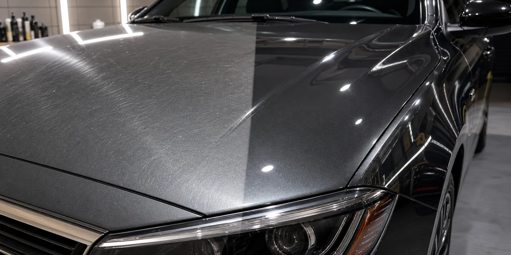

Кузов потерял блеск
Лак выглядит мутным, автомобиль визуально стал старше, цвет не раскрывается на свету.

Полировка и уход
Осмотрим состояние кузова, подберем подходящий тип полировки и заранее сориентируем по стоимости после фото или осмотра автомобиля. Задача - не обещать чудо, а показать честный, видимый результат.
Когда нужна
Полировка помогает вернуть блеск, освежить внешний вид автомобиля и подготовить кузов к дальнейшему уходу.
Лак выглядит мутным, автомобиль визуально стал старше, цвет не раскрывается на свету.
На солнце видна паутинка, легкие риски и круговые следы от неправильного ухода.
Ухоженный кузов повышает первое впечатление и помогает покупателю спокойнее смотреть автомобиль.
Можно освежить внешний вид, убрать часть поверхностных дефектов и обсудить дальнейшую защиту.
До / после
На кузове хорошо видны глубина цвета, отражения и разница между уставшим лаком и ухоженной поверхностью.
Процесс
Работа начинается с осмотра: важно понять состояние лака, ожидания владельца и подходящий формат полировки.
Смотрим состояние лака, глубину дефектов, зоны риска и ожидания владельца.
Честно объясняем, что уйдет полировкой, а что требует другого ремонта или останется заметным.
Локальная работа, освежающая полировка, более глубокая коррекция или подготовка к продаже.
Как мыть и ухаживать за кузовом после работ, чтобы результат сохранялся дольше.
Что отправить
Марку и модель авто, несколько фото кузова при дневном свете, крупные планы царапин и общий вид автомобиля.
Без обещаний вслепую
Глубокие царапины, сколы и повреждения лака могут не уйти полировкой полностью. Это лучше проговорить до начала работ.
Оценка после вводных
Напишите в мессенджер и приложите фото: так мастер быстрее поймет объем работ и даст честную ориентировку.